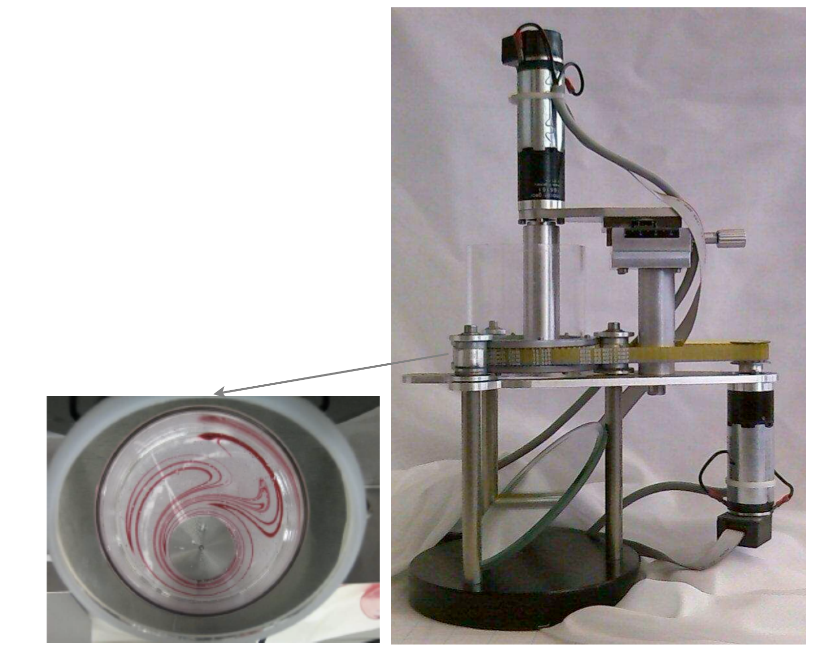

Unit 8 – Approximate Dynamic Programming: Online Replanning, MPC and Rollout
4SC000 Optimal Control and Reinforcement Learning
Slides · Exercises · Jupyter notebooks
1 Where we stand, and what is still missing
Unit 7 left us with two numerical methods for stage decision problems, and a table summarizing when each one may be used:
| dimension | convexity | DP discretization | Static optimization |
|---|---|---|---|
| small \(n\leq3\) | convex | ✓ | ✓ |
| small \(n\leq3\) | non-convex | ✓ | ✗ |
| large | convex | ✗ | ✓ |
| large | non-convex | ✗ | ✗ |
Discretization gives an approximate policy when the state and input dimensions are small; static optimization gives an optimal path when the problem is convex. The empty corner – large and non-convex – is untouched, and even in the convex corner we only obtain a path, valid for one initial state and no disturbances.
This unit closes both gaps with a single idea. We will see how to obtain optimal (or near-optimal) policies out of methods that compute only paths, by recomputing the path online at every stage and discarding all but its first decision. Applied to linear quadratic control with input constraints, this turns a quadratic-programming solver into a feedback controller. Applied more aggressively – truncating the horizon, or appending a cheap base policy beyond it – it gives the two workhorse methods of modern control practice, model predictive control and rollout, which we will use on a genuinely large, genuinely non-convex problem: the control of switched linear systems.
2 Approximate dynamic programming
2.1 The challenge
Iterating the dynamic programming algorithm for stage decision problems is hard because the costs-to-go are hard to compute:
\[ J_k(x_k) = \min_{u_k} \ g_k(x_k,u_k)+J_{k+1}(f_k(x_k,u_k)). \]

The two methods of Unit 7 each fall short in a specific way. Discretization is only possible when the state and input spaces are not large. Static optimization only assures optimality for convex problems, and in any case only produces optimal paths. So the question becomes: how do we obtain a (sub)optimal policy?
Three ideas answer this, in increasing order of cheapness and decreasing order of fidelity.
2.2 Idea I: the online replanning policy
Compute an optimal path online, starting from the current state, and apply only its first decision.

Then repeat the whole procedure at the next stage, from whatever state the system actually reached. This method is also known as certainty equivalent control (CEC), because it plans as though the uncertain future were certain – a name that connects it directly to the certainty equivalence property of Unit 6. The essential point is that the feedback comes not from the plan, which is open loop, but from the act of re-planning from the measured state.
2.3 Idea II: model predictive control
Idea I still requires solving an optimization problem over the entire remaining horizon at every stage, which may be far too expensive. Idea II is the same, but computes decisions only over a short horizon \(H\).

Repeating this in a receding (or rolling) horizon way is the fundamental idea of model predictive control (MPC). The optimization problem to be solved at each stage is much smaller, which is what makes the algorithm feasible to run online. Note, however, that MPC is in general not optimal – and not even for problems without disturbances, since truncating the horizon genuinely discards information about the future.
2.4 Idea III: rollout
Truncating the horizon throws away everything beyond step \(H\). Idea III recovers some of it cheaply: optimize over the horizon as in MPC, but evaluate what happens after the horizon by simulating a given base policy rather than by ignoring it.

Again the first decision is applied and the procedure repeated in a receding-horizon way. The optimization problem at each stage is as small as in MPC, so the method is equally feasible online; this is the fundamental idea of rollout. Like MPC, it is in general not optimal, not even without disturbances.
2.5 The unifying view
All three ideas are instances of one scheme. Approximate the cost-to-go by some \(\tilde J_{k+1}\) that is cheap to evaluate, and use the solution \(u_k\) of
\[ J_k(x_k) = \min_{u_k} \ g_k(x_k,u_k)+\tilde J_{k+1}(f_k(x_k,u_k)) \]
as the control input – in general different from the optimal control input.

The decisive practical feature is this: for each state \(x_k\) we only have to minimize this one function and compute one action. We never have to iterate the cost-to-go backwards over the whole state space, which is what made exact DP intractable in the first place. This formulation is also more general than any of the three ideas – \(\tilde J_{k+1}\) can be anything, including a function learned from data, which is exactly the bridge to the reinforcement learning material later in the course.
Let us see how each idea fits this template.
- Idea I (online replanning). For problems with disturbances, the true cost – which requires computing expected values – is approximated by a deterministic cost. For problems without disturbances, Idea I yields exactly the same policy as DP.
- Idea II (MPC). The approximation is the deterministic cost over a short horizon. This is an approximation even for problems without disturbances.
- Idea III (rollout). The approximation is the cost of the base policy when \(H=1\), and the cost over a short horizon plus the cost of the base policy when the horizon is larger than one. Again, this is an approximation even for problems without disturbances.
Although we mainly consider finite-horizon costs, the ideas extend naturally to infinite-horizon costs – and in the switched-systems section at the end of this unit the infinite-horizon version is actually the easier one to write down.
We now formalize these statements.
2.6 Online replanning, formally
For the stage decision problem
\[ x_{k+1}=f_k(x_k,u_k,w_k), \qquad \sum_{k=0}^{h-1}g_k(x_k,u_k)+g_h(x_h), \]
the online replanning policy is the following implicit rule.
At each stage \(k\) (initially \(k=0\)), assuming the full state \(x_k\) is measured, solve the problem below for the initial condition \(x_k\), assuming no disturbances (\(w_k=0\), \(w_{k+1}=0,\dots\)):
\[ \sum_{\ell=k}^{h-1}g_\ell(x_\ell,u_\ell)+g_h(x_h), \qquad x_{\ell+1}=f_\ell(x_\ell,u_\ell,0), \quad \ell\in\{k,k+1,\dots,h-1\}, \]
obtaining estimates of the optimal control inputs \(u_k,u_{k+1},\dots,u_{h-1}\).
Take the first decision \(u_k\) and apply it to the process. The system evolves to \(x_{k+1}=f_k(x_k,u_k,w_k)\), which is in general different from the predicted \(x_{k+1}=f_k(x_k,u_k,0)\), because of the disturbance. Repeat from step 1.

This is not merely a heuristic. For problems with no disturbances it is equivalent to a DP step:
\[ \min_{u_k} \ g_k(x_k,u_k)+\tilde J_{k+1}(x_{k+1}), \qquad x_{\ell+1}=f_\ell(x_\ell,u_\ell,0), \quad \ell\in\{k,\dots,h-1\}, \tag{1} \]
\[ \tilde J_{k+1}(x_{k+1}) = \min_{u_{k+1},\dots,u_{h-1}} \ \sum_{\ell=k+1}^{h-1} g_\ell(x_\ell,u_\ell) \quad \text{s.t. (1), initial condition } x_{k+1}, \]
selecting \(u_k\) and applying it. For problems without disturbances the \(\tilde J_k\) are the true optimal costs-to-go, and they satisfy the DP equation
\[ \tilde J_k(x_k) = \min_{u_k} \ g_k(x_k,u_k)+\tilde J_{k+1}(x_{k+1}), \]
so online replanning is exactly optimal. For problems with stochastic disturbances the \(\tilde J_k\) are approximations of the optimal costs-to-go,
\[ J_k(x_k) = \min_{u_k} \ g_k(x_k,u_k)+\mathbb{E}[J_{k+1}(x_{k+1})], \qquad x_{\ell+1}=f_\ell(x_\ell,u_\ell,w_\ell), \quad \ell\in\{k,\dots,h-1\}, \]
\[ \underbrace{\phantom{J_k(x_k) = \min_{u_k} \ g_k(x_k,u_k)+\mathbb{E}[J_{k+1}(x_{k+1})]}}_{\text{approximated by } \tilde J_{k+1}(x_{k+1})} \]
the approximation consisting precisely in replacing the expectation over future disturbances by a deterministic prediction that sets them to zero.
Unit 6 proved that for a linear model with a quadratic cost and additive zero-mean disturbances, the optimal policy coincides with the deterministic one – the certainty equivalence property. Combine this with the statement above: for which class of problems is the online replanning policy of this section not merely a good heuristic but genuinely the optimal policy?
Two classes, for two different reasons.
First, any problem without disturbances, as argued above: there the \(\tilde J_k\) are the true costs-to-go, so replanning reproduces the DP policy exactly. (Replanning is then wasted effort in principle, since the plan never needs revising; in practice it still protects against model error.)
Second, linear models with quadratic costs and additive zero-mean white disturbances – exactly the setting of Unit 6. There the approximation “set the future disturbances to zero” is not an approximation of the optimal policy at all: certainty equivalence says the optimal policy is the one computed as if the disturbances were absent. The realized cost is of course higher than the deterministic one, by the \(\sum_k\text{trace}(P_{k+1}\mathbb{E}[w_kw_k^\intercal])\) term, but the policy is the same.
This is why the constrained linear quadratic example in the next section works so well: the problem is very nearly the one for which certainty equivalence is a theorem. The input constraint is what takes it outside that theorem, but it remains convex.
2.7 Model predictive control, formally

At each time \(k\), consider the optimal control problem only over a horizon \(H\):
\[ \min_{u_k,u_{k+1},\dots,u_{k+H-1}} \ \sum_{\ell=k}^{k+H-1}g_\ell(x_\ell,u_\ell) \quad \text{s.t.} \quad x_{\ell+1}=f_\ell(x_\ell,u_\ell), \quad \ell\in\{k,\dots,k+H-1\}, \tag{1} \]
and select the first control input \(u_k\) resulting from this optimization. Equivalently, in the ADP template, \(\min_{u_k} \ g_k(x_k,u_k)+\tilde J_{k+1}(x_{k+1})\) with
\[ \tilde J_{k+1}(x_{k+1}) = \min_{u_{k+1},\dots,u_{k+H-1}} \ \sum_{\ell=k+1}^{k+H-1}g_\ell(x_\ell,u_\ell) \quad \text{s.t. (1)}. \]
Two practical points. First, at the last decision stages \(k\in\{h-H,h-H-1,\dots,h\}\) the cost function is slightly different for finite-horizon problems, since the window now runs past the end of the problem and must include the terminal cost:
\[ \min_{u_k,u_{k+1},\dots,u_{k+H-1}} \ \sum_{\ell=k}^{k+H-1}g_\ell(x_\ell,u_\ell)+g_h(x_h) \quad \text{s.t. (1),} \ \ell\in\{k,\dots,h-1\}. \]
Second, there are several variants of MPC, and in particular some variants use a terminal constraint, which is useful for proving stability – for example, imposing that the state after the horizon be zero, \(x_{k+H}=0\) (and, for finite-horizon problems at the last stages, \(x_h=0\)). Without such a device, nothing in the formulation above prevents the controller from steering the state somewhere convenient within the window and disastrous beyond it.
2.8 Rollout, formally

Rollout is MPC with a base policy \(u_k=\bar\mu(x_k)\) used after the horizon. At each time, consider the optimal control problem over the horizon \(H\), assuming the base policy is applied afterwards:
\[ \min_{u_k,u_{k+1},\dots,u_{k+H-1}} \ \sum_{\ell=k}^{k+H-1}g_\ell(x_\ell,u_\ell) + \sum_{\ell=k+H}^{h-1}g_\ell(x_\ell,\bar\mu_\ell(x_\ell)) + g_h(x_h) \quad \text{s.t. (1)}, \]
and select the first control input \(u_k\). Equivalently, in the ADP template, \(\min_{u_k} \ g_k(x_k,u_k)+\tilde J_{k+1}(x_{k+1})\) with
\[ \tilde J_{k+1}(x_{k+1}) = \min_{u_{k+1},\dots,u_{k+H-1}} \ \sum_{\ell=k+1}^{k+H-1}g_\ell(x_\ell,u_\ell) + \sum_{\ell=k+H}^{h-1}g_\ell(x_\ell,\bar\mu_\ell(x_\ell)) + g_h(x_h). \]
The second sum is not optimized over – it is simply evaluated, by simulating the base policy forward. That is what makes rollout cheap: the cost of the tail is computed, not searched.
2.9 Further remarks on approximate dynamic programming
A few observations that apply to all of the above, and that are easy to get wrong.
The quality of an approximation is measured by how good the resulting input is – how close the input produced by the approximation is to the optimal \(u_k^*\) – and not by how good the approximation \(\tilde J_{k+1}(x_{k+1})\) is of \(J_{k+1}(x_{k+1})\). A crude cost-to-go approximation that happens to rank the available actions correctly is worth more than an accurate one that does not. (Adding a constant to \(\tilde J_{k+1}\), for the extreme example, changes its accuracy but not a single decision.)
Decisions need only be computed, in real time, for the value of the present state. We do not need to iterate the cost-to-go over the whole state space, which is what the curse of dimensionality made impossible.
There are many variants for approximating the costs-to-go beyond the three developed here. But because the approximation is heuristic in nature, it is very hard to quantify when a specific method is good, and to establish formal results about it. For example, we saw in Unit 5 that the optimal policy for the infinite-horizon linear quadratic regulator makes the closed loop of a linear system stable. Establishing the analogous statement for an approximate method is typically very hard – which is why the terminal-constraint variants of MPC mentioned above exist, and why the stability proof in the switched-systems section below is worth the trouble.
3 Linear quadratic control with inequality constraints
The first application is the one closest to Units 5-6, and it shows the whole progression – path, then CEC policy, then MPC – on a problem we already understand well.
3.1 Problem formulation
Dynamic model \(\quad x_{k+1}=Ax_k+Bu_k+w_k\), with \(u_k\in\mathbb{R}\) for simplicity and \(w_k\) a possible disturbance.
Cost function \(\quad \displaystyle\sum_{k=0}^{h-1}x_k^\intercal Qx_k+u_k^\intercal Ru_k+x_h^\intercal Q_hx_h\).
Input constraints \(\quad u_k\in[-c,c]\) for all \(k\), for a given \(c>0\).
Find a policy \(\pi=\{\mu_0,\dots,\mu_{h-1}\}\), \(u_k=\mu_k(x_k)\), which minimizes the cost function.
The input constraint is what takes this problem outside Unit 5. Actuators saturate – a motor has a maximum torque, a valve is either fully open or not – and the LQR gain \(u_k=K_kx_k\) simply ignores that fact. Nor can the constraint be handled by clipping the LQR input at \(\pm c\) after the fact: the DP recursion that produced \(K_k\) assumed the unclipped input would be available at every future stage, so the resulting policy is not optimal for the constrained problem.
Let us first obtain an optimal path, and then upgrade it to a policy by online replanning and MPC.
3.2 The quadratic programming formulation
Stack the state and input trajectories,
\[ \bar x=[x_1^\intercal \ x_2^\intercal \ \dots \ x_h^\intercal]^\intercal, \qquad \bar u=[u_0^\intercal \ u_1^\intercal \ \dots \ u_{h-1}^\intercal]^\intercal . \]
Applying the state-elimination idea of Unit 7 in batch form, every predicted state is an affine function of \(x_0\) and \(\bar u\), so that
Cost function \(\quad (\bar A x_0+\bar B\bar u)^\intercal \bar Q(\bar Ax_0+\bar B\bar u)+\bar u^\intercal \bar R\bar u\),
Dynamic model (equality constraints) \(\quad \bar x=\bar Ax_0+\bar B\bar u\),
Inequality constraints \(\quad \begin{bmatrix}I\\-I\end{bmatrix}\bar u \leq c\begin{bmatrix}1\\\vdots\\1\end{bmatrix}\),
where
\[ \bar A=\begin{bmatrix}A\\A^2\\\vdots\\A^h\end{bmatrix} \quad \bar B=\begin{bmatrix}B&0&0&0&\cdots&0\\AB&B&0&0&\cdots&0\\A^2B&AB&B&0&\cdots&0\\A^3B&A^2B&AB&B&\cdots&0\\\vdots&\ddots&\ddots&\ddots&\ddots&\vdots\\A^{h-1}B&A^{h-2}B&A^{h-3}B&\cdots&AB&B\end{bmatrix} \quad \bar Q=\begin{bmatrix}Q&0&0&\cdots&0\\0&Q&0&\cdots&0\\\vdots&\ddots&\ddots&\ddots&\vdots\\0&0&0&\cdots&Q_h\end{bmatrix} \quad \bar R=\begin{bmatrix}R&0&0&\cdots&0\\0&R&0&\cdots&0\\\vdots&\ddots&\ddots&\ddots&\vdots\\0&0&0&\cdots&R\end{bmatrix} . \]
The block lower-triangular structure of \(\bar B\) is just causality written down: the state at stage \(\ell\) depends on the inputs up to \(\ell-1\) and on no later ones.
This is a standard quadratic programming problem – see, e.g., Convex Optimization by Boyd and Vandenberghe – implemented in MATLAB as quadprog.m. It is a convex problem: the cost is a convex quadratic and the feasible set, a box, is convex. As discussed in Unit 7, that is precisely the situation in which numerical optimization is reliable. This already allows us to obtain an optimal path.
3.3 Example: the constrained double integrator
Take the double integrator of Unit 5,

with \(x=[y\ \ v]^\intercal\) and parameters \(Q=Q_h=I\), \(R=1\), \(x_0=[1\ \ 0]^\intercal\), \(\tau=0.2\) and \(h=50\). Without constraints we recover the optimal path of Unit 5.

Now impose \(u_k\in[-L,L]\) with \(L=0.25\) and solve the QP again.

So far, so good – but all of this is an open-loop plan. What happens if the system is actually disturbed?

The behaviour is far from what was intended. We want an optimal policy – which is what CEC and MPC will give us.
The panel runs the batch QP of this section on the cart and animates the result. Everything is as in the figures above — \(\tau=0.2\), \(Q=Q_h=I\), \(R=0.01\), \(x_0=[1\ \ 0]^\intercal\), \(h=50\), bound \(L=0.25\) — and the strategy selector walks through the three figures in order.
- No bound. The QP reproduces the Unit 5 answer: the first input is \(u_0=-3.7718\), exactly \(K_0x_0\) from the Riccati recursion, and the closed-loop cost is \(6.1852=x_0^\intercal P_0x_0\). That agreement is the check worth making first, because it says the batch formulation is the same problem written differently.
- Bound \(|u|\leq0.25\). Fourteen of the fifty inputs sit exactly on the bound and the cost rises to \(9.7729\). Look at the shape: this is not the unconstrained solution clipped. Clipping \(-3.77\) to \(-0.25\) and leaving the rest alone would be far worse; the QP spreads the braking over the whole saturated stretch instead.
- That plan, replayed with disturbances. The same fifty numbers are applied open-loop to a system that is being pushed around, and the cart ends at \(|x_h|=0.39\) instead of the origin, with a cost of \(11.25\). Nothing in the scheme notices.
Things to try: raise \(L\) until the bound stops binding and watch the largest \(|u|\) settle back on \(3.7715\); raise \(R\) and watch the input get gentler and the bound stop mattering; change the seed to convince yourself the drift in the third case is not one unlucky realization. The two closed-loop strategies in the selector are the subject of the next two sections — try them now if you like, but they are discussed there.
3.4 The online replanning policy for this problem
The construction is the batch formulation above, restarted at each stage from the measured state. At each stage \(k\) define
\[ \bar x=[x_{k+1}^\intercal \ x_{k+2}^\intercal \ \dots \ x_h^\intercal]^\intercal, \qquad \bar u=[u_k^\intercal \ u_{k+1}^\intercal \ \dots \ u_{h-1}^\intercal]^\intercal , \]
so that
Cost function \(\quad \displaystyle\sum_{\ell=k}^{h-1}x_\ell^\intercal Qx_\ell+u_\ell^\intercal Ru_\ell+x_h^\intercal Q_hx_h = (\bar Ax_k+\bar B\bar u)^\intercal \bar Q(\bar Ax_k+\bar B\bar u)+\bar u^\intercal \bar R\bar u\),
Dynamic model (equality constraints) \(\quad \bar x=\bar Ax_k+\bar B\bar u\),
Inequality constraints \(\quad \begin{bmatrix}I\\-I\end{bmatrix}\bar u \leq c\begin{bmatrix}1\\\vdots\\1\end{bmatrix}\),
with
\[ \bar A=\begin{bmatrix}A\\A^2\\\vdots\\A^{h-k}\end{bmatrix} \quad \bar B=\begin{bmatrix}B&0&0&0&\cdots&0\\AB&B&0&0&\cdots&0\\A^2B&AB&B&0&\cdots&0\\A^3B&A^2B&AB&B&\cdots&0\\\vdots&\ddots&\ddots&\ddots&\ddots&\vdots\\A^{h-1-k}B&A^{h-2-k}B&A^{h-3-k}B&\cdots&AB&B\end{bmatrix} \quad \bar Q=\begin{bmatrix}Q&0&0&\cdots&0\\0&Q&0&\cdots&0\\\vdots&\ddots&\ddots&\ddots&\vdots\\0&0&0&\cdots&Q_h\end{bmatrix} \quad \bar R=\begin{bmatrix}R&0&0&\cdots&0\\0&R&0&\cdots&0\\\vdots&\ddots&\ddots&\ddots&\vdots\\0&0&0&\cdots&R\end{bmatrix} . \]
Take the first component of \(\bar u\), that is \(u_k\), and apply it to the plant. Note that the stacked matrices shrink as \(k\) advances: the problem solved at each stage is a little smaller than the previous one.

The contrast with Fig. 12 is the whole point of this unit in one picture. The optimization solved is exactly the same at its core; the only change is that it is re-solved from the state that was actually reached.
Same panel, now opening on the online replanning policy, and on exactly the same disturbance realization that drifted away in §3.3 — the seed is shared, so the comparison is honest. Switch between that plan, replayed with disturbances and online replanning and the contrast of Fig. 12 against Fig. 13 appears in one click: the cost falls from \(11.25\) to \(9.09\) and the final state from \(|x_h|=0.39\) to \(0.0115\).
The orange dashed curve is the plan currently held — the whole remaining \(\bar u\) from this stage — drawn ahead of the blue trajectory that has actually happened. Step through and watch it: at every stage a fresh plan is computed, only its first entry is ever used, and the next plan does not agree with the tail of the previous one. That disagreement is the feedback.
Two things worth noticing in the readout. The QP is solved fifty times, with the number of variables shrinking from \(50\) down to \(1\) as \(k\) advances — the shrinking-horizon property this section describes. And with the disturbances switched off (\(\sigma=0\)) the replanning cost is exactly the open-loop cost, \(9.7729\): with a perfect model and no disturbance, re-solving changes nothing at all, which is the cleanest statement of why this only buys something when something can go wrong.
3.5 Discussion: why it works, and why MPC is still needed
Certainty equivalent control allowed us to transform an algorithm that computes optimal paths – a call to quadprog.m – into an algorithm that computes optimal policies. That it works so well here follows from the problem being convex: a problem with inequality constraints is convex when the cost is convex and the feasible set is convex, both of which hold for this problem.
Two reasons nevertheless push us towards MPC.
The first is computational. Although quadprog.m is quite efficient, in problems with a high sampling rate or a long time horizon of interest it may not be possible to run it inside one sampling period. The receding horizon caps the size of the QP once and for all, independently of \(h\).
The second is more interesting, and often decisive in practice: the model is typically not extremely accurate, and planning far into the future on the basis of a model you do not trust can produce worse results than planning a short way ahead. Considering a short horizon may therefore actually improve performance.
We shall try MPC imposing that the final state after the prediction horizon be zero. See Bertsekas’ book, Ch. 6, for the close connection with rollout in this case – imposing \(x_{k+H}=0\) amounts to taking the base policy “apply zero control input” after the horizon.
3.6 MPC for this problem
At each stage define
\[ \bar x=[x_{k+1}^\intercal \ x_{k+2}^\intercal \ \dots \ x_{k+H-1}^\intercal]^\intercal, \qquad \bar u=[u_k^\intercal \ u_{k+1}^\intercal \ \dots \ u_{k+H-1}^\intercal]^\intercal , \]
(the state stack runs to \(k+H-1\) as in the lecture slides; the convention only affects whether the last predicted state carries a penalty), and
Cost function \(\quad \displaystyle\sum_{\ell=k}^{k+H-1}x_\ell^\intercal Qx_\ell+u_\ell^\intercal Ru_\ell = (\bar Ax_k+\bar B\bar u)^\intercal \bar Q(\bar Ax_k+\bar B\bar u)+\bar u^\intercal \bar R\bar u\),
Dynamic model (equality constraints) \(\quad \bar x=\bar Ax_k+\bar B\bar u\),
Inequality constraints \(\quad \begin{bmatrix}I\\-I\end{bmatrix}\bar u \leq c\begin{bmatrix}1\\\vdots\\1\end{bmatrix}\),
with
\[ \bar A=\begin{bmatrix}A\\A^2\\\vdots\\A^{H-1}\end{bmatrix} \quad \bar B=\begin{bmatrix}B&0&0&0&\cdots&0\\AB&B&0&0&\cdots&0\\A^2B&AB&B&0&\cdots&0\\\vdots&\ddots&\ddots&\ddots&\ddots&\vdots\\A^{H-2}B&A^{H-3}B&\cdots&\cdots&B&0\end{bmatrix} \quad \bar Q=\begin{bmatrix}Q&0&0&\cdots&0\\0&Q&0&\cdots&0\\\vdots&\ddots&\ddots&\ddots&\vdots\\0&0&0&\cdots&Q\end{bmatrix} \quad \bar R=\begin{bmatrix}R&0&0&\cdots&0\\0&R&0&\cdots&0\\\vdots&\ddots&\ddots&\ddots&\vdots\\0&0&0&\cdots&R\end{bmatrix} . \]
Take the first component of \(\bar u\), that is \(u_k\), and apply it to the plant. Unlike the replanning policy, these matrices have a fixed size, set by \(H\) and not by \(h-k\).
Running this on the constrained double integrator, the first iteration produces a prediction over the window:

Applying the first control input \(u_0=-0.25\) – the input saturates immediately – leads to the state \(x_1=\begin{bmatrix}0.995\\-0.05\end{bmatrix}\), and the process is repeated.

Note that the end result differs from the one predicted at iteration 0, because the state and input predictions change over time – at each stage a new window is optimized, and its plan need not agree with the previous one. This is characteristic of receding-horizon control and is not a defect: the executed trajectory is the concatenation of first steps, not any one of the plans.

A runnable Python companion to this section is code/unit8/mpc.py, which builds the batch prediction matrices above, solves the resulting QP by projected gradient descent (no external QP solver required), and simulates the closed loop; the original annotated notebook is A_8_LQinputconstraints.ipynb. See code/unit8/README.md.
Suppose the input bound \(c\) is so large that the constraint \(|u_\ell|\leq c\) is never active, the horizon is the full remaining horizon (\(H=h-k\)), and there are no disturbances. What policy does the MPC scheme above produce?
Exactly the LQR policy of Unit 5, \(u_k=K_kx_k\). With the constraints inactive the QP is an unconstrained convex quadratic minimization, whose solution is the optimal path for the remaining horizon; taking its first component and repeating at every stage is online replanning, which for a problem without disturbances reproduces the DP policy. And the DP policy for this problem is the Riccati feedback of Unit 5.
This is a useful sanity check when implementing MPC: switch off the constraints, lengthen the horizon, and verify that the computed first input matches \(K_kx_k\). It is exactly the test that code/unit8/mpc.py runs against Unit 5’s Riccati recursion.
Same panel again, now opening on MPC. The only change from the previous section is that the window has a fixed length \(H\) instead of running to the end of the horizon, so the QP stops shrinking — the readout says “at most \(H\) variables (fixed)” rather than “\(50\) down to \(1\)”.
- At \(H=25\) the closed-loop cost is \(9.0893\), matching online replanning to four decimals: half the horizon is already far enough ahead to make no difference on this problem, at half the computation.
- Shorten the window. \(H=10\) gives \(9.0940\) and \(H=5\) gives \(9.2969\) — worse, but only in the third digit, while the QP is a tenth of the size. This is the computational argument of §3.5 made concrete.
- Step through the first few stages with the orange dashed plan visible. At \(k=0\) it is the prediction of Fig. 14, and the first input is \(u_0=-0.25\), saturated immediately, giving \(x_1=[0.995\ \ -0.05]^\intercal\). Then compare that plan with the blue curve the system eventually follows: they are not the same, exactly as the text says. The executed trajectory is the concatenation of first steps, not any one plan.
- Set \(H\) very short — \(H=2\) or \(3\) — and the horizon becomes too short to see the braking distance it needs. The cart overshoots and the cost climbs. That is the other half of the design trade-off: short windows are cheap and robust to model error, but they cannot anticipate what they cannot see.
3.7 Reference tracking
The ideas above extend directly to the problem of having the state follow a desired trajectory \(\{r_k \mid k\in\{0,1,\dots,h\}\}\):
Dynamic model \(\quad x_{k+1}=Ax_k+Bu_k+w_k\), \(u_k\in\mathbb{R}\) for simplicity.
Cost function \(\quad \displaystyle\sum_{k=0}^{h-1}(x_k-r_k)^\intercal Q(x_k-r_k)+u_k^\intercal Ru_k+(x_h-r_h)^\intercal Q_h(x_h-r_h)\).
Input constraints \(\quad u_k\in[-c,c]\) for all \(k\), for a given \(c>0\).
Find a policy \(\pi=\{\mu_0,\dots,\mu_{h-1}\}\), \(u_k=\mu_k(x_k)\), minimizing the cost.
Stacking as before, with \(\bar r=[r_1^\intercal \dots r_h^\intercal]^\intercal\) alongside \(\bar x=[x_1^\intercal \dots x_h^\intercal]^\intercal\) and \(\bar u=[u_0^\intercal \dots u_{h-1}^\intercal]^\intercal\):
Cost function \(\quad (\bar Ax_0+\bar B\bar u+\bar r)^\intercal \bar Q(\bar Ax_0+\bar B\bar u+\bar r)+\bar u^\intercal \bar R\bar u\),
Dynamic model (equality constraints) \(\quad \bar x=\bar Ax_0+\bar B\bar u\),
Inequality constraints \(\quad \begin{bmatrix}I\\-I\end{bmatrix}\bar u \leq c\begin{bmatrix}1\\\vdots\\1\end{bmatrix}\),
with \(\bar A,\bar B,\bar Q,\bar R\) exactly as in the stabilization problem above. The reference enters only as an extra affine term in the cost, so the problem is still a convex QP, and the MPC and online replanning ideas carry over unchanged.
The tracking formulation above, flown. This is A_8_A_MPC_quad_tracking.ipynb: the longitudinal channel of a quadcopter, \(m\ddot p=mg\theta\) and \(I_\theta\ddot\theta=\tau\), which after scaling the pitch and the torque is a fourth-order integrator with \(x=[p\ \ \dot p\ \ \ddot p\ \ \dddot p]^\intercal\) and \(u=\ddddot p\). Only the position is penalized over the window, \(C=[1\ 0\ 0\ 0]\), with \(\rho=0.01\) on the input and the bound \(|u|\leq0.4\); the reference is \(r(t)=3\sin(0.3t)\), \(\tau=0.1\), and the vehicle starts away from it at \(x_0=[-1\ \ -1\ \ 0.1\ \ 0.4]^\intercal\). The drawing is tilted by the true pitch, since \(\theta=\ddot p/g\) is the third state divided by gravity.
Worth trying:
- Watch the default run first. The quadcopter catches the reference within about ten seconds and then holds it to an rms error of \(0.26\) m while banking to about \(7^\circ\), with the input against its bound for roughly half the steps.
- Now shorten the horizon. At \(H=60\) the tracking is visibly ragged (rms \(1.36\)); at \(H=50\) and below the loop goes unstable and the position runs away to hundreds of metres. The panel says so in red. This is the opposite lesson to the cart of §3.6, where a short window merely cost a little, and it is worth understanding why: here only the position is penalized and there is no terminal cost, so a short window has no reason to arrive with a sensible velocity or acceleration. The horizon \(H=80\) in the notebook is not a round number picked for comfort — it sits not far above the stability boundary for this problem.
- Lengthen it instead: \(H=100\) gives rms \(0.054\) and \(H=120\) gives \(0.050\), so the benefit flattens out once the window covers a decent fraction of the \(20.9\) s reference period.
- Tighten the actuator to \(c=0.15\) and the loop fails again, this time for an honest physical reason: no input that small can swing a three-metre amplitude at this frequency. Open it to \(c=2\) and the error falls to \(0.004\). Between those two is the regime where the constraint is what shapes the answer, which is the whole subject of this part of the unit.
- Speed the reference up (\(\omega_r=0.6\)) or shrink it (\(r=1\)) and watch the pitch angle: it is the second derivative of the position, so the faster the manoeuvre, the harder the vehicle has to bank.
3.8 Application: quadcopter trajectory tracking
MPC for reference tracking is applied in the MSc thesis “Quadrotor Trajectory Tracking using Cascaded Model Predictive Control and Attitude Control on \(S^2\times S^1\)”, Dave Kooijman, to control a quadcopter. As explained there, MPC has three advantages over a standard feedback plus feedforward (PD+FF) policy:
it allows input and state constraints to be met;
it integrates feedforward and feedback in a single computation;
it anticipates future references.
Experimental results make each of these concrete.


Point (iii) is worth dwelling on, because it is the one that has no counterpart in classical feedback design: the controller knows where the reference is going, not merely where it is now, and the optimization uses that information automatically.
The simulation and the experiment below make the advantages of MPC clear.
An MPC trajectory-tracking example for a linearized quadcopter is available as A_8_A_MPC_quad_tracking.ipynb.
4 Control of switched systems
The constrained linear quadratic problem was convex and moderate in size, so static optimization was available and ADP was a convenience. We turn now to a class of problems in the bottom row of the Unit 7 table – combinatorial, hence thoroughly non-convex – where ADP is not a convenience but the only practical option, and where, remarkably, it works extremely well.
4.1 Switched linear systems
Dynamic model \(\quad x_{k+1}=A_{\sigma_k}x_k\), with \(\sigma_k\in\{1,\dots,m\}\) and \(x_k\in\mathbb{R}^n\).
Cost function \(\quad \displaystyle\sum_{k=0}^{h-1}x_k^\intercal Q_{\sigma_k}x_k+x_h^\intercal \bar Q_hx_h\).
Goal: find an optimal path (or policy) for the control input \(u_k=\sigma_k\), for a given initial condition \(x_0\).
The state is continuous, but the input is a finite set of labels: at each stage we choose which of \(m\) linear modes the system runs in. There is no continuous input to differentiate with respect to, so the static optimization machinery of Unit 7 does not apply at all. Applying the dynamic programming algorithm, meanwhile, leads to a combinatorial problem: the exact cost-to-go at stage \(k\) is a pointwise minimum over \(m^{h-k}\) quadratic forms, one per remaining switching sequence, and that number explodes. So let us apply approximate dynamic programming.
4.2 The three ideas, specialized
CEC (online replanning).
Step 1. At step \(k\), compute all the possible control sequences
\[ (\sigma_k,\sigma_{k+1},\sigma_{k+2},\dots,\sigma_{h-1}). \]
Step 2. Compute the cost \(\displaystyle\sum_{\ell=k}^{h-1}x_\ell^\intercal Q_{\sigma_\ell}x_\ell+x_h^\intercal \bar Q_hx_h\) for each of these sequences, and pick a sequence \((\tilde\sigma_k,\tilde\sigma_{k+1},\tilde\sigma_{k+2},\dots,\tilde\sigma_{h-1})\) with minimum cost.
Step 3. Apply the first element \(\sigma_k=\tilde\sigma_k\), set \(k=k+1\), and go to step 1 if \(k\neq h\).
This is still combinatorial – \(m^{h-k}\) sequences at stage \(k\) – so it is not yet a solution. It is, however, the correct starting point, and the two remaining ideas fix exactly this.
MPC.
Step 1. At step \(k\), compute all possible control sequences in the prediction horizon,
\[ (\sigma_k,\sigma_{k+1},\dots,\sigma_{k+H-1}) \ \text{ if } 0\leq k\leq h-H, \qquad (\sigma_k,\sigma_{k+1},\dots,\sigma_{h-1}) \ \text{ otherwise}. \]
Step 2. Compute the cost
\[ \sum_{\ell=k}^{k+H-1}x_\ell^\intercal Q_{\sigma_\ell}x_\ell \ \text{ if } 0\leq k\leq h-H, \qquad \sum_{\ell=k}^{h-1}x_\ell^\intercal Q_{\sigma_\ell}x_\ell+x_h^\intercal \bar Q_hx_h \ \text{ otherwise,} \]
for each of these sequences, and pick a minimizing sequence \((\tilde\sigma_k,\dots,\tilde\sigma_{k+H-1})\), or \((\tilde\sigma_k,\dots,\tilde\sigma_{h-1})\) as appropriate.
Step 3. Apply the first element \(\sigma_k=\tilde\sigma_k\), set \(k=k+1\), and go to step 1 if \(k\neq h\).
Now the enumeration is over \(m^H\) sequences, which is a fixed and controllable number. For \(m=4\) and \(H=4\) this is \(256\) evaluations per stage – entirely routine.
Rollout. Pick a base policy \((\bar\sigma_0,\bar\sigma_1,\dots,\bar\sigma_{h-1})\), a horizon \(H>0\), and start with \(k=0\).
At step \(k\), compute all the control sequences with free \(\sigma_k,\dots,\sigma_{k+H-1}\) of the form
\[ (\sigma_k,\dots,\sigma_{k+H-1},\bar\sigma_0,\bar\sigma_1,\dots,\bar\sigma_{h-1-k-H}) \ \text{ if } 0\leq k\leq h-H, \qquad (\sigma_k,\sigma_{k+1},\dots,\sigma_{h-1}) \ \text{ otherwise}. \]
Compute the cost \(\displaystyle\sum_{\ell=k}^{h-1}x_\ell^\intercal Q_{\sigma_\ell}x_\ell+x_h^\intercal \bar Q_hx_h\) for each of these sequences, and pick a minimizing one \((\tilde\sigma_k,\tilde\sigma_{k+1},\tilde\sigma_{k+2},\dots,\tilde\sigma_{h-1})\).
Apply the first element \(\sigma_k=\tilde\sigma_k\), set \(k=k+1\), and go to step 1 if \(k\neq h\).
The enumeration is again over \(m^H\) sequences, exactly as in MPC – the tail is fixed by the base policy, not searched – but the cost being compared now accounts for the whole remaining horizon rather than just the window.
4.3 Application: mixing two fluids in minimum time
How do you mix two fluids in minimum time?

The actuation consists of four possible rotations, decided once every \(h\) seconds, so \(\sigma_k\in\{1,\dots,4\}\).
The basic mechanism for effective mixing is repetitive stretching and folding – the same operation a baker performs on dough.

Repeating this mechanism is exactly a periodic open-loop strategy. The question this application asks is whether a closed-loop strategy can do better.
Model. Divide the domain into \(N\) subdomains and let \(x_k^i\), \(i\in\{1,\dots,N\}\), denote the concentration of fluid in subdomain \(i\) at time \(k\tau\).

The concentrations then evolve as a function of the control action \(\sigma_k\in\{1,\dots,4\}\) according to
\[ x_{k+1} = A_{\sigma_k}x_k, \]
which is precisely the switched linear system above – each rotation option is a fixed permutation-and-mixing matrix acting on the vector of subdomain concentrations.

Cost function. When homogeneity is achieved, the concentration of every subdomain equals a common constant \(c\), so the error
\[ e_k := x_k - c\begin{bmatrix}1\\1\\\vdots\\1\end{bmatrix}, \qquad c = \frac1N\begin{bmatrix}1 & 1 & \dots & 1\end{bmatrix}x_0, \]
converges to zero – note that \(c\) is fixed by the initial condition, since mixing conserves the total amount of fluid. The intensity of segregation is defined as
\[ e_k^\intercal e_k, \]
and measures how far the concentration profile is from homogeneity. We are interested in minimizing the intensity of segregation at every time step,
\[ \sum_{k=0}^h e_k^\intercal e_k, \]
which is a quadratic cost of exactly the form assumed above (the cost matrices \(Q_\sigma\) being the identity, after the change of variable from \(x\) to \(e\)).
Results. Comparing rollout against the periodic strategy:

The periodic sequence consists of alternating a rotation of the outer cylinder with a clockwise rotation of the inner cylinder. The rollout strategy optimizes over a horizon of length \(4\), assuming that the periodic policy is used afterwards.
What about MPC? An MPC approach with horizon \(H=2\) boils down to picking the decision that minimizes the squared norm of the error at the next iteration – a minimum-error “greedy” strategy, since the first term does not depend on \(\sigma_k\):
\[ \underset{\sigma_k}{\arg\min} \ e_k^\intercal e_k+e_{k+1}^\intercal e_{k+1} = \underset{\sigma_k}{\arg\min} \ e_k^\intercal e_k+e_k^\intercal A_{\sigma_k}^\intercal A_{\sigma_k}e_k = \underset{\sigma_k}{\arg\min} \ \underbrace{e_k^\intercal A_{\sigma_k}^\intercal A_{\sigma_k}e_k}_{e_{k+1}^\intercal e_{k+1}} . \]

In this case MPC with \(H=2\) leads to worse results. This deserves emphasis, because it is the clearest illustration in the course of what the base policy buys you. Greedy mixing undoes at the next step what it gained at this one: the rotation that most reduces the error immediately is not the one that sets up the stretching-and-folding sequence which reduces it over the following ten steps. Rollout, by evaluating the periodic base policy beyond the horizon, sees that consequence; MPC with a short horizon and no terminal cost does not.
4.4 Explicit rollout and MPC policies for switched systems
For switched linear systems we can go further and write the rollout and MPC policies down in closed form. This is easier for infinite-horizon costs than for finite-horizon ones, so consider
\[ x_{k+1}=A_{\sigma_k}x_k, \qquad \sum_{k=0}^\infty x_k^\intercal Q_{\sigma_k}x_k . \]
Note that online replanning is not even viable here: in the infinite- horizon case it would entail enumerating infinitely many options.
Cost of the base policy. Suppose the base policy is a constant switching \(\sigma_k=j\) for all \(k\). Then
\[ \sum_{k=\ell}^\infty x_k^\intercal Q_jx_k = x_\ell^\intercal M^jx_\ell \quad \text{when} \quad x_{k+1}=A_jx_k, \]
where \(M^j=\sum_{k=0}^\infty (A_j^\intercal)^kQ_j(A_j)^k\) is the solution of the linear (Lyapunov) equation
\[ A_j^\intercal M^jA_j - M^j = -Q_j . \]
This is the crucial computational fact: the infinite tail of the cost, under a fixed mode, is a quadratic form whose matrix is obtained by solving one linear equation – no simulation, no truncation.
If the base policy is periodic, a similar expression holds. For example, with \(m=2\), \(\sigma_k\in\{1,2\}\) and \((\sigma_\ell,\sigma_{\ell+1},\sigma_{\ell+2},\sigma_{\ell+3},\sigma_{\ell+4},\dots)=(1,2,1,2,1,\dots)\),
\[ \sum_{k=\ell}^\infty x_k^\intercal Q_{\sigma_k}x_k = x_\ell^\intercal \bar M^1x_\ell, \]
where \(\bar M^1,\bar M^2\) solve the coupled pair
\[ A_1^\intercal \bar M^2A_1-\bar M^1=-Q_1, \qquad A_2^\intercal \bar M^1A_2-\bar M^2=-Q_2 . \]
The explicit rollout policy. In the prediction horizon there are \(m^H\) options. Index them \(i\in\{1,2,3,\dots,m^H\}\), so that each \(i\) corresponds to a unique set of free schedules,
\[ (\sigma_k,\sigma_{k+1},\dots,\sigma_{k+H-1}) = (\bar\sigma_0^i,\bar\sigma_1^i,\bar\sigma_2^i,\dots,\bar\sigma_{H-1}^i), \]
and to a unique cost, which is again a quadratic form:
\[ x_k^\intercal P^ix_k = \sum_{\ell=k}^{k+H-1}x_\ell^\intercal Q_{\sigma_\ell}x_\ell + \sum_{\ell=k+H}^\infty x_\ell^\intercal Q_{\bar\sigma_\ell}x_\ell . \]
The rollout policy is then simply
\[ \iota(x_k) = \underset{i}{\arg\min} \ x_k^\intercal P^ix_k, \qquad \sigma_k=\pi(\iota(x_k)), \]
where \(\pi\) extracts the first component of the schedule associated with \(i\): \(\pi(i)=\bar\sigma_0^i\).
The practical significance is that the \(m^H\) matrices \(P^i\) are computed offline, once. Online, the controller evaluates \(m^H\) quadratic forms at the current state and takes the smallest – a handful of matrix-vector products, well within any realistic sampling period.
Example. For \(m=2\) and \(H=2\), with \(\bar M\) the base-policy cost matrix:
| \(i\) | \(\bar\sigma_0\) | \(\bar\sigma_1\) | \(\pi(i)\) | \(P^i\) |
|---|---|---|---|---|
| 1 | 1 | 1 | 1 | \(P^1=Q_1+A_1^\intercal Q_1A_1+(A_1A_1)^\intercal \bar M(A_1A_1)\) |
| 2 | 1 | 2 | 1 | \(P^2=Q_1+A_1^\intercal Q_2A_1+(A_2A_1)^\intercal \bar M(A_2A_1)\) |
| 3 | 2 | 1 | 2 | \(P^3=Q_2+A_2^\intercal Q_1A_2+(A_1A_2)^\intercal \bar M(A_1A_2)\) |
| 4 | 2 | 2 | 2 | \(P^4=Q_2+A_2^\intercal Q_2A_2+(A_2A_2)^\intercal \bar M(A_2A_2)\) |
Each row reads left to right along the predicted trajectory: the cost incurred at the current state under the first mode, the cost at the next state under the second mode, and the base-policy tail evaluated at the state two steps ahead.
For a switched system with \(m\) modes, state dimension \(n\) and rollout horizon \(H\), count (a) how many matrices \(P^i\) must be stored, and (b) how many floating-point operations the online policy needs per stage, to leading order. Compare with exact DP over a horizon \(h\).
\(m^H\) matrices of size \(n\times n\), computed offline. For \(m=2\), \(H=4\), \(n=4\) that is \(16\) small matrices.
Each evaluation \(x_k^\intercal P^ix_k\) costs \(O(n^2)\), so the online cost per stage is \(O(m^Hn^2)\) – and \(H\) is ours to choose.
Exact DP, by contrast, would represent the cost-to-go at stage \(k\) as the pointwise minimum of up to \(m^{h-k}\) quadratic forms, so both the storage and the work grow exponentially in the problem horizon \(h\) rather than in the design horizon \(H\). That is the whole trade: we have exchanged \(m^{h}\) for \(m^{H}\) and optimality for suboptimality.
Note also that the growth in (b) is in \(m^H\) and not in the state dimension \(n\), which is why this method is comfortable with the resource-aware example below where \(n\) is large.
4.5 Application: resource-aware control over a network
How do you efficiently control several dynamical systems over a wireless network, when you must decide how to schedule the transmissions?

Model. The two processes are identical and modelled by
\[ x_{k+1}^i = \bar Ax_k^i+\bar Bu_k^i, \qquad i\in\{1,2\}, \]
each with an identical cost
\[ J_i = \sum_{k=0}^\infty (x_k^i)^\intercal \bar Qx_k^i+(u_k^i)^\intercal \bar Ru_k^i, \]
and we wish to minimize \(J_1+J_2\). If each system could update its control law at every time instant, the optimal control law would be the LQR feedback \(u_k^i=K_ix_k^i\). Instead, since each system can only update its input at mutually exclusive times, the input is held at its previous value whenever the other loop has the channel:
\[ u_k^1 = \begin{cases}K_1x_k^1, & \text{if } \sigma_k=1\\v_k^1, & \text{if } \sigma_k=2\end{cases} \qquad u_k^2 = \begin{cases}K_2x_k^2, & \text{if } \sigma_k=2\\v_k^2, & \text{if } \sigma_k=1\end{cases} \qquad v_k^i=u_{k-1}^i, \ \ i\in\{1,2\}. \]
Augmenting the state with the held inputs turns this into precisely a switched linear system. Letting
\[ x_k = \begin{bmatrix}x_k^1\\v_k^1\\x_k^2\\v_k^2\end{bmatrix}, \]
we can write model \(\ x_{k+1}=A_{\sigma_k}x_k\) and cost \(\ \sum_{k=0}^\infty x_k^\intercal Q_{\sigma_k}x_k\), where
\[ A_1=\begin{bmatrix}\bar A+\bar BK & 0 & 0 & 0\\K & 0 & 0 & 0\\0 & 0 & \bar A & \bar B\\0 & 0 & 0 & I\end{bmatrix} \qquad A_2=\begin{bmatrix}\bar A & \bar B & 0 & 0\\0 & I & 0 & 0\\0 & 0 & \bar A+\bar BK & 0\\0 & 0 & K & 0\end{bmatrix}, \]
\[ Q_1=\begin{bmatrix}\bar Q+K^\intercal \bar RK & 0 & 0 & 0\\0 & 0 & 0 & 0\\0 & 0 & \bar Q & 0\\0 & 0 & 0 & \bar R\end{bmatrix} \qquad Q_2=\begin{bmatrix}\bar Q & 0 & 0 & 0\\0 & \bar R & 0 & 0\\0 & 0 & \bar Q+K^\intercal \bar RK & 0\\0 & 0 & 0 & 0\end{bmatrix}. \]
Read the blocks of \(A_1\): the loop that transmits (\(i=1\)) closes with the LQR gain, \(\bar A+\bar BK\), and records its new input in \(v^1\); the loop that does not (\(i=2\)) runs open loop with its held input, which is carried forward by the identity block.
Example. With parameters
\[ \bar A=e^{A_c\tau}, \qquad \bar B=\int_0^\tau e^{A_cs}ds\,B_c, \qquad A_c=\begin{bmatrix}0&1\\3&0\end{bmatrix}, \qquad B_c=\begin{bmatrix}0\\1\end{bmatrix}, \]
\[ \bar Q=I, \qquad \bar R=0.01, \qquad \tau=0.1, \qquad x_0=\begin{bmatrix}-0.1\\0\\0\\1\\0\\0\end{bmatrix}, \qquad \text{base policy } (1,2,1,2,1,\dots), \]
the rollout policy is compared against the periodic base policy.

The costs are: periodic (base) \(16.1330\), rollout \(12.7055\) – an improvement of about a fifth, obtained purely by scheduling better, with the same controllers and the same channel.
The schedule itself explains where the improvement comes from. Given this initial condition, paying more attention to system 2 leads to better results:
| \(k\) | 1 | 2 | 3 | 4 | 5 | 6 | 7 | 8 | 9 | 10 |
|---|---|---|---|---|---|---|---|---|---|---|
| \(\sigma_k\) | 2 | 2 | 2 | 1 | 2 | 1 | 2 | 1 | 2 | 1 |
The rollout policy gives the channel to loop 2 three times in a row at the start – system 2 begins far from equilibrium, system 1 close to it – and only then settles into something close to the alternating base policy. A periodic schedule, being state-independent, cannot do this.

Both pendulums, both policies, on an initial condition of your choosing. The model is the one above — \(A_c=\begin{bmatrix}0&1\\3&0\end{bmatrix}\), \(\bar Q=I\), \(\bar R=0.01\), \(\tau=0.1\), the LQR gain \(K=[-9.0556\ \ -7.0543]\) — and the rollout policy is the one-step lookahead over the periodic base policy, exactly as described. Click on either pendulum to tip it, or type the angles in.
The loop holding the channel is drawn in colour and has its input recomputed; the other is greyed out and runs on its held input, which the staircase in the bottom plot makes visible. The grey dashed curves are the other policy on the same initial condition, so the comparison is always on screen.
Worth trying:
- The default is the example above, \(\theta^1_0=-0.1\) and \(\theta^2_0=1\). Rollout gives the channel to loop 2 three times in a row — the schedule reads \(2,2,2,1,2,1,2,1,\dots\) — and costs \(12.71\) against the periodic policy’s \(16.13\), about \(21\%\) better. Watch loop 2 being brought back under control while loop 1, which was nearly upright anyway, is left to drift a little.
- Now make the two loops symmetric: set both angles to \(0.5\). Rollout and the periodic policy cost exactly the same, and the rollout schedule is the alternating one. When neither loop deserves priority, the state-independent policy is already optimal — and rollout, being a one-step improvement over it, agrees. That is the cleanest way to see what rollout is actually exploiting: asymmetry.
- Swap the two angles (\(\theta^1_0=1\), \(\theta^2_0=-0.1\)). The gain drops to about \(4\%\) — not because the problem is easier, but because the periodic schedule happens to start by serving loop 1, which is the one that needs it. Rollout cannot improve much on a base policy that is already doing the right thing by luck.
- Tip one pendulum well over, to \(\pm1\) rad or so, and leave the other at zero. The schedule becomes a long run of updates to the disturbed loop before it returns to alternating.
- Try velocity instead of angle: both angles zero, \(\dot\theta^1_0=1\). Rollout is about a quarter better again, and the schedule shows it spending the channel on loop 1 for a long stretch — the state that matters is not only where the pendulum is, but where it is going.
A runnable Python companion to this section is code/unit8/rollout.py – exact backward DP for switched systems, the Lyapunov-equation base-policy cost, and the \(H=1\) rollout policy – with the original annotated notebooks A_8_SLS.ipynb (switched linear systems and the resource-aware application) and A_8_K_MPCRollout.ipynb (MPC and rollout with random disturbances) alongside it.
A second instance of the same idea: how do you control the two arms of a SCARA robot with only one amplifier, so that the tip tracks a trajectory with minimum error?

Only one of \(\tau_1\) or \(\tau_2\) can be applied at each time instant – structurally the same resource-allocation problem as the shared wireless channel, and solved the same way.
5 Summary
When exact dynamic programming is out of reach and discretization is not feasible, approximate dynamic programming provides a practical way to obtain a policy. Its single organizing idea is to replace the true cost-to-go \(J_{k+1}\) by a cheap approximation \(\tilde J_{k+1}\) and solve only the one-step minimization \(\min_{u_k} g_k(x_k,u_k)+\tilde J_{k+1}(f_k(x_k,u_k))\) at the current state, online, rather than iterating a function backwards over the whole state space.
Three approximations were developed, in decreasing order of cost and fidelity. Online replanning (CEC) solves the full remaining problem with the disturbances set to zero and applies only the first decision; it is exactly optimal for problems without disturbances, and – by the certainty equivalence result of Unit 6 – for linear quadratic problems with additive noise. MPC truncates the horizon to a fixed window \(H\), making the online problem a fixed, small size at the price of suboptimality even in the deterministic case; terminal constraints are the standard device for recovering stability guarantees. Rollout keeps the short window but evaluates a base policy beyond it, which often recovers most of what truncation lost – dramatically so in the fluid-mixing application, where greedy \(H=2\) MPC performed worse than the periodic policy it was meant to improve on, while rollout over the same policy performed substantially better.
Two applications carried the ideas. For linear quadratic control with input constraints, batch state elimination turns the problem into a convex quadratic program, and re-solving that program at every stage converts a path-computing routine into a disturbance-rejecting feedback policy; the same construction extends to reference tracking, where MPC additionally integrates feedforward with feedback and anticipates future references. For switched linear systems, where the input is a finite set of modes and exact DP is combinatorial, the infinite-horizon cost of a fixed or periodic base policy is a quadratic form obtained from a Lyapunov equation, which makes the rollout policy explicit: \(m^H\) matrices \(P^i\) computed offline, and an \(\arg\min\) over \(m^H\) quadratic forms online.
The one honest caveat is that all of this is heuristic. Because the approximation is chosen rather than derived, it must be assessed case by case, and the quality of an approximation is measured by the decisions it produces, not by how closely \(\tilde J_{k+1}\) resembles \(J_{k+1}\). With that caveat, the comparison table of Unit 7 can finally be completed:
| dimension | convexity | DP discretization | Static optimization | ADP | ADP (switched systems) |
|---|---|---|---|---|---|
| small | convex | ✓ | ✓ | ? | ✓ |
| small | non-convex | ✓ | ✗ | ? | ✓ |
| large | convex | ✗ | ✓ | ? | ✓ |
| large | non-convex | ✗ | ✗ | ? | ✓ |
The question marks in the ADP column are not an oversight. They are the answer: in general one cannot say in advance whether an approximation will be good, which is why the last column – a class of problems where it demonstrably is – had to be established by working the case through.